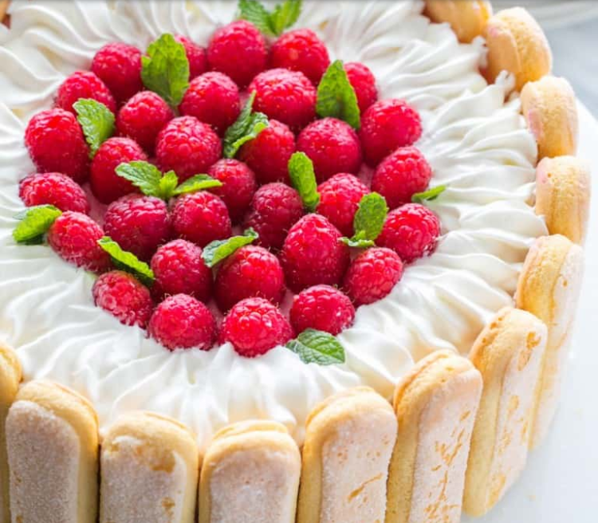

Charlotte Cake Recipe

Ingredients For The sponge cake:
- 4 large eggs, room temperature
- 2/3 cup granulated sugar
- 2/3 cup cake flour (make your own with 2 ingredients!) *measured correctly
- 1/4 tsp baking powder
- 3-4 Tbsp raspberry preserves or jam

Ingredients For Raspberry Mousse:
- 10 oz (2 1/2 cups) frozen raspberries
- 1/2 cup granulated sugar
- Juice from 1 medium lemon (2 Tbsp for mousse + 1 Tbsp for simple syrup below)
- 1 Tbsp Knox unflavored Gelatin (from 1 1/4 packets)
- cups heavy whipping cream
- Tbsp confectioners (powdered) sugar
For the Simple Syrup, Stir together:
- 1 cup warm water
- 1 Tbsp fresh lemon juice
- 1 Tbsp sugar
Topping/ Cake Decor for Charlotte Cake:
1 cup fresh raspberries and mint leaves for garnish

How To Make Charlotte Cake:
If you never made a European Sponge Cake, watch the video before you get started:
Click to visit